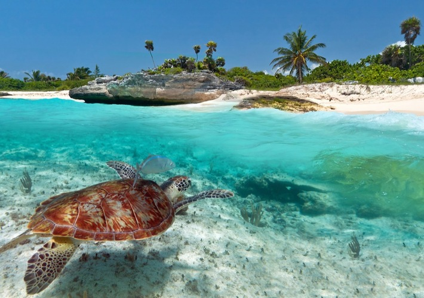

Conzumel Tour Sights
Check out the Great Mayan Temple at Conzumel
By Will Brown
This great relic from the past is one of the last few remmants of the Mayan people. This is a wonderful sight to visit and behold. This is a must do while here in Conzumel. If you still around later a local performance will take place with the great temple the focal point or some simply wish to capture the setting sun.
Lookout Point
By Will Brown
This lookout point has it all for our travellers. It features the Mayan pyramid in the background with the ocean views. Some have quoted this backdrop to be the best lookout point in the Americas. This has appeared in a number of postcards and has featured in a number of travel shows.
Or just enjoy the Beaches and local wildlife
By Will Brown
Some just enjoy checking out our local beaches of which we have a few. Our beautiful beaches host a number of exotic wildlife local to the area. The Conzumel government take great pride in their beaches and ask all those present to look after them also for future generations to enjoy.
